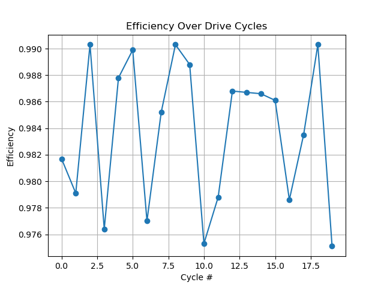
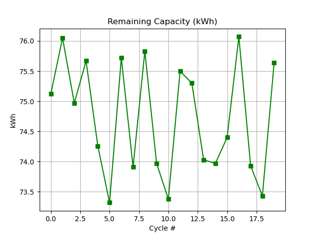
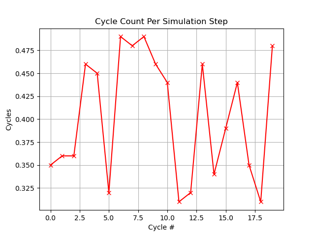
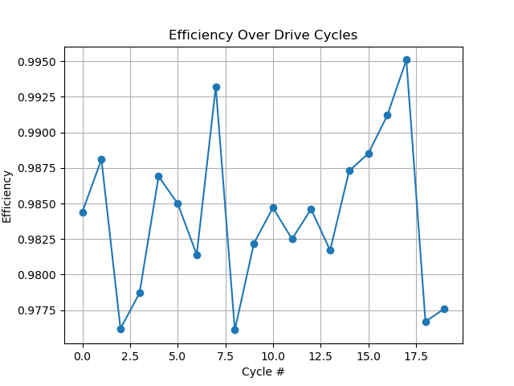
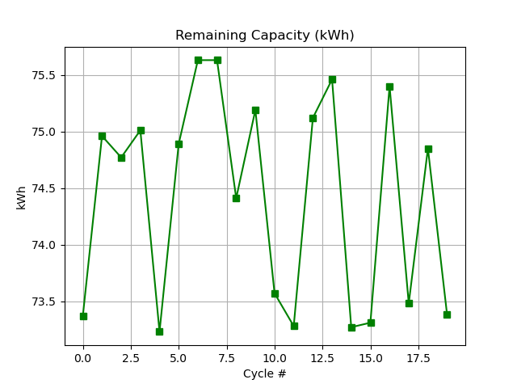
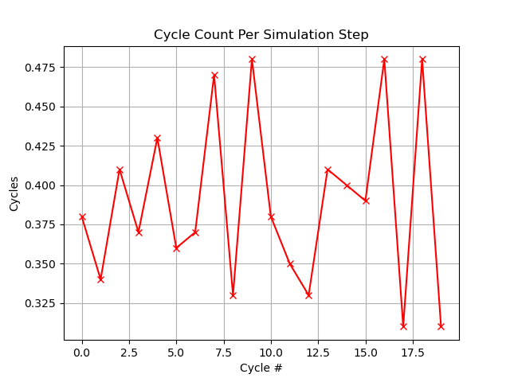
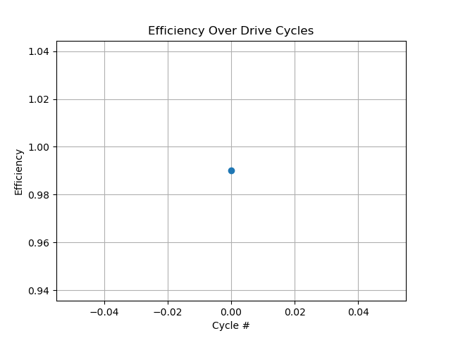
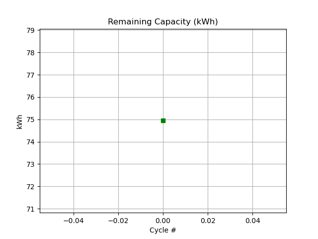
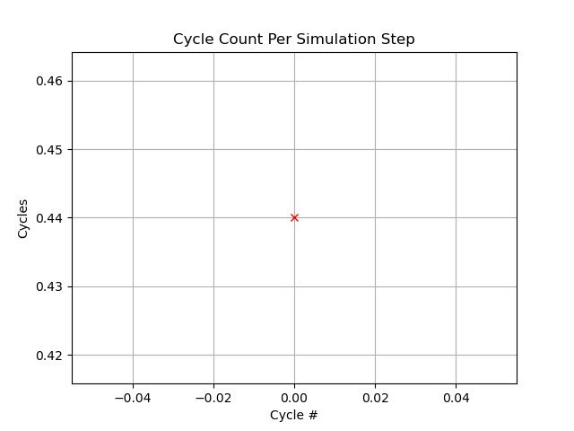

AXVIAM Evaluation Report
This report summarizes simulation and diagnostic evaluations performed on EV battery packs using AXVIAM’s healing overlay system.
Run Timestamp: 20250710-123048
Evaluation Summary
- Analyzed Cells: 96
- Healed Cells: 20 (from real-world log)
- Avg Efficiency Gain: from 0.77 → 0.985
- Miles per Charge: estimated 231 → 295 mi
- Signature: ψₐ:8356 ∇̃:5 Ω
- Input File: converted_healing_input_20250710-032042.json
Overlay Simulation Results

Efficiency improvement across simulated drive cycles

Remaining battery capacity over time

Charge-discharge cycles per simulation step
Real Log Simulation Results

Efficiency improvement across simulated drive cycles

Remaining battery capacity over time

Charge-discharge cycles per simulation step
Demonstration Simulation

Efficiency improvement across simulated drive cycles

Remaining battery capacity over time

Charge-discharge cycles per simulation step